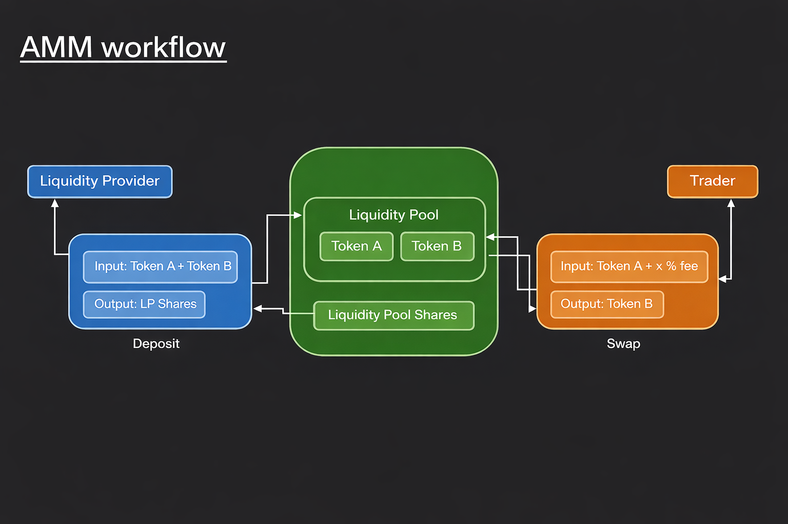
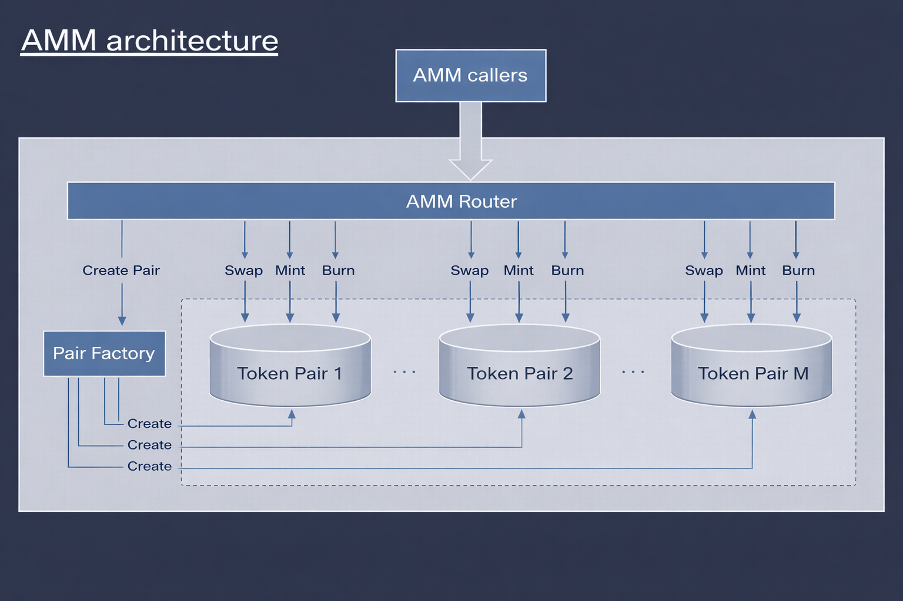
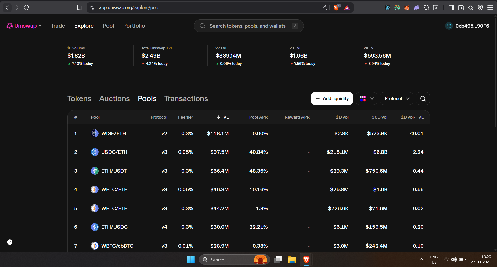
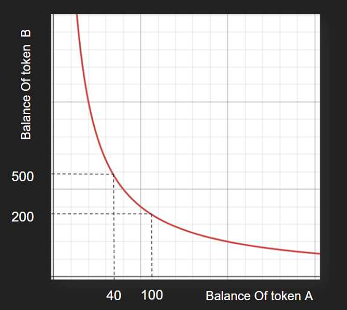
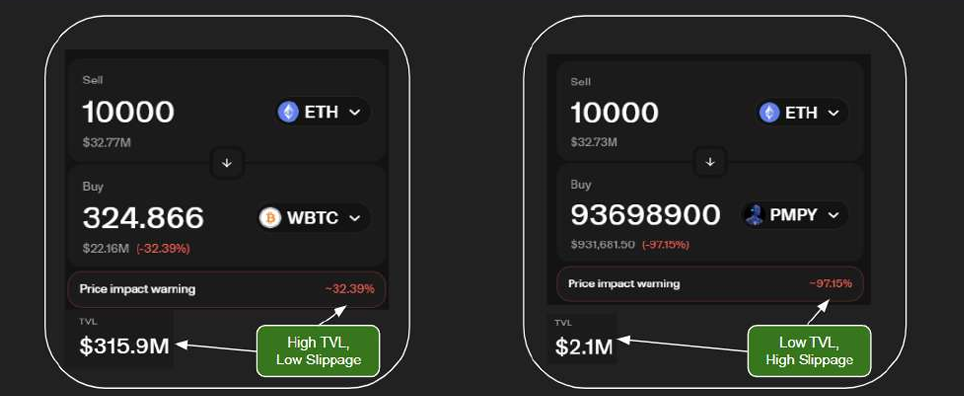
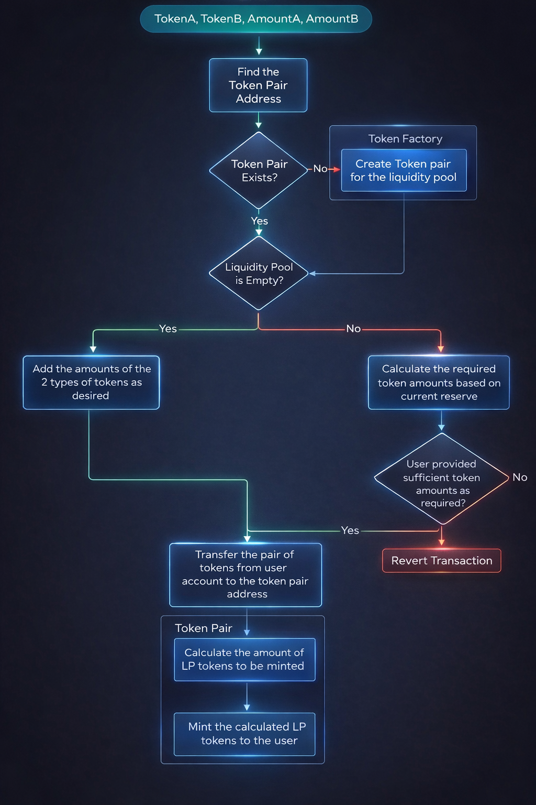

What is DeFi?
DeFi is short for decentralized finance — an umbrella term for peer-to-peer financial services on public blockchains.
In traditional (centralized) finance, every transaction flows through an institution — a bank, a broker, or an exchange. That institution acts as the trusted middleman. DeFi removes that middleman entirely and replaces it with open-source smart contracts running on a public blockchain.
Traditional Finance (TradFi)
You → Bank → Counterparty. Central authority controls all transactions.
Decentralized Finance (DeFi)
You → Smart Contract ← Counterparty. No bank, no CEO, just transparent code.
There is no bank. No CEO. No office. Just transparent, immutable code that executes automatically when conditions are met.
DeFi Platforms
DeFi platforms run entirely on-chain. Their code is public, their smart contracts are auditable, and nobody controls your funds but you.
| Platform | Type | Blockchain |
|---|---|---|
| Uniswap | Decentralized Exchange (DEX) | Ethereum |
| PancakeSwap | Decentralized Exchange (DEX) | BNB Smart Chain |
| AAVE | Lending & Borrowing | Ethereum |
| Compound | Lending & Borrowing | Ethereum |
| Curve Finance | Stablecoin DEX | Ethereum |
| Yearn Finance | Yield Aggregator | Ethereum |
| SushiSwap | DEX | Multi-chain |
| Balancer | DEX / Portfolio | Ethereum |
| Lido | Liquid Staking | Ethereum |
| GMX | Perpetuals DEX | Arbitrum/Avalanche |
| Polkadot | Layer 0 Protocol | Own chain |
| Solana | Layer 1 Blockchain | Own chain |
| Avalanche | Layer 1 Blockchain | Own chain |
| DAI | Stablecoin Protocol | Ethereum |
| DeFi Swap | DEX | Multi-chain |
CeFi Platforms
CeFi (Centralized Finance) platforms are crypto exchanges that still operate with a central authority. They're easier to use for beginners but come with trade-offs — you don't control your private keys, meaning you don't truly own your assets.
"Not your keys, not your coins" — the core argument against CeFi.
| Platform | Notable Feature |
|---|---|
| Binance | Largest exchange by volume globally |
| Coinbase | Most popular in the US, publicly listed |
| Bitfinex | Long-running exchange with advanced tools |
| Huobi | Major Asian exchange |
| Gemini | Regulated US exchange |
| OKX | Global exchange with diverse products |
| Crypto.com | Known for Visa crypto cards |
| CEX.io | European exchange |
| Bitstamp | One of the oldest crypto exchanges |
DeFi Features
DeFi is not just "banking without banks." It has four fundamental properties that make it categorically different:
Open
Anyone on Earth with an internet connection and a crypto wallet can access DeFi protocols. No credit score, no identity verification, no geographic restrictions.
Non-Custodial
DeFi protocols never take custody of your funds. When you interact with a smart contract, your tokens move only according to predefined rules.
Anonymous
You interact with DeFi using only your wallet address. No KYC required by the protocol itself.
Zero Downtime
Smart contracts run as long as the blockchain runs. No maintenance window, no market close. DeFi operates 24/7/365.
What is an AMM?
AMM stands for Automated Market Maker. It's a DeFi concept and a key component of most decentralized exchanges (DEXs). Used in: Uniswap, SushiSwap, Balancer, PancakeSwap, and many more.
🤖 Automated
The process is carried out entirely by computer programs (algorithms and smart contracts), without any need for manual intervention. Automated systems execute trades, make pricing decisions, and respond to market conditions based on predefined mathematical rules.
🏪 Market
In finance, a market is a platform or environment where assets are bought and sold — a place where buyers and sellers come together to trade financial instruments like stocks, bonds, commodities, or digital assets.
💧 Maker
A maker is typically someone who provides liquidity to a liquidity pool. By depositing both tokens of a trading pair, they are "making the market" — creating the conditions that allow others to trade.
History of AMM
AMMs didn't appear overnight. Here's the timeline of how they evolved:
AMM Workflow

An AMM has two types of participants. Their interactions create a self-sustaining marketplace:
Liquidity Provider (LP)
Deposits Token A + Token B → Receives LP Shares (proof of ownership of their portion of the pool)
Trader
Sends Token A + small fee (e.g., 0.3%) → Receives Token B at the price determined by the pool's math
The fees collected from traders accumulate in the pool and are shared proportionally among all LPs — this is their reward for providing liquidity.
Liquidity
In DeFi, liquidity refers to the availability of assets in a market that can be quickly and easily bought or sold without causing a significant impact on the asset's price.
High liquidity in DeFi markets means there are ample assets available for trading, ensuring that transactions can occur smoothly and efficiently.
Why does liquidity matter?
Imagine you want to swap 1 ETH for USDC. If the pool has:
High Liquidity
e.g., 10,000 ETH + 20,000,000 USDC: your 1 ETH barely changes the ratio. You get a fair price.
Low Liquidity
e.g., 2 ETH + 4,000 USDC: your 1 ETH is 50% of the pool! The price shoots up dramatically. You get a terrible deal.
Liquidity Pool
A Liquidity Pool is a pool of tokens (usually two different types) locked in a smart contract. These pools facilitate the trading of tokens without the need for an intermediary.
Generally, liquidity pools involve two tokens — often a popular cryptocurrency like Ethereum (ETH) paired with either a stablecoin like DAI or USDC, or another cryptocurrency like LINK.
🔑 The Key Insight: Ratio = Price
If a pool has 100 ETH and 200,000 USDC, then:
1 ETH = 200,000 / 100 = 2,000 USDC
1 USDC = 100 / 200,000 = 0.0005 ETHNo oracle needed. No external price feed. The ratio IS the price.
Order Book
Before AMMs, DEXes tried to use order books — the same model used by stock exchanges and centralized crypto exchanges like Binance.
In a DEX, order book operations are carried out through smart contracts on the blockchain. This means every action — placing an order, cancelling, or executing a trade — requires an on-chain transaction. This leads to high gas costs.
Some DEXes that use order books: dYdX (perpetuals), 0x (decentralized order book), Serum (Solana-based).
The Problem
Every order placement, cancellation, and fill costs gas. Makes on-chain order books expensive and slow, especially during high network congestion.
The AMM Solution
Replace the order book entirely with a mathematical formula and a shared pool. No orders to place. No matching engine. Just math.
AMM Architecture
An AMM is not a single contract — it's a layered system with three key components:

1. AMM Callers
Who interacts with the system — users, DApps, wallets, protocols, bots.
2. AMM Router
The brain that routes actions and finds the best trade paths.
3. Pair Factory + Pools
The actual liquidity pools — each a separate smart contract per token pair.
AMM Callers
AMM Callers are the users or smart contracts that interact with the AMM (e.g., DApps, wallets, or other protocols).
Callers can be:
- Individual users using a DApp frontend like app.uniswap.org
- Wallets like MetaMask that call the router directly
- Other smart contracts — e.g., a yield farming protocol that auto-compounds by swapping reward tokens
- Bots — arbitrage bots that constantly monitor price discrepancies and trade to profit
AMM Router
The AMM router is a smart contract that handles the interactions between users and various liquidity pools. It acts as an intermediary that finds the best trade routes across multiple pools to facilitate token swaps.
1. Routing Trades
When a user wants to swap tokens, the router finds the best path to complete the trade. This may involve multiple pools to get the best price or minimize slippage.
For example: You want to swap DAI → LINK but there's no direct
DAI/LINK pool. The router automatically routes:
DAI → ETH → LINK using two hops.
2. Optimizing Trades
The router optimizes the trade by splitting it across different pools if necessary, ensuring that users get the best possible rate. This is called "smart order routing."
3. Interface for Actions
The router acts as the interface for users to Swap tokens, Mint liquidity (add tokens and receive LP tokens), and Burn liquidity (remove tokens by giving back LP tokens).
Pair Factory
A pair factory is a smart contract responsible for creating and managing liquidity pools (pairs) on a DEX. It listens to "Create Pair" calls from the router or directly from callers.
| Step | Actor | Action |
|---|---|---|
| 1. User Request | User | Wants to create a new liquidity pool for a specific token pair |
| 2. Factory Interaction | User ↔ Contract | The user interacts with the pair factory smart contract, specifying the two tokens |
| 3. Pool Creation | Factory Contract | Checks if the pair already exists. If NOT, deploys a new pair contract and initializes it |
| 4. Registration | Factory Contract | The new pair's address is added to the factory's registry — a master ledger of all pools |
| 5. User Interaction | Anyone | The user and others can now add liquidity or trade tokens |
Factory Contract — getPair
The Uniswap V2 Factory contract has a key function:
getPair(address tokenA, address tokenB) → addressWhat it does:
- Takes two ERC-20 token addresses as input
- Returns the address of the liquidity pool (pair) contract associated with them
-
If the pair doesn't exist, it returns
address(0)(the zero address)
// Real example from Uniswap V2:
Input Token A: 0xC02aaA39b223FE8D0A0e5C4F27eAD9083C756Cc2 (WETH)
Input Token B: 0x6B175474E89094C44Da98b954EedeAC495271d0F (DAI)
Output: → The specific pool contract holding all WETH/DAI liquidityUniswap Pools — Real Data

Uniswap V2 Token Fetch
Uniswap V2 Router has a useful read function:
getAmountsOut(uint256 amountIn, address[] path)
Parameters
-
amountIn (uint256)— The amount of the input token you want to swap. For 1 DAI (18 decimals):1000000000000000000 -
path (address[])— The route the swap should follow. Example:[DAI, WETH]for a direct swap, or[DAI, WETH, USDC]for a multi-hop swap.
This function is what DEX aggregators and arbitrage bots use to calculate optimal swap paths without executing the actual transaction first.
Types of AMM
AMMs come in different mathematical flavors. Each formula has different trade-offs:
Constant Product
x · y = k
Used by Uniswap.
Best for general token pairs and volatile assets.
Constant Sum
x + y = k
Used by Balancer.
Best for multi-asset pools.
Curve-Based AMMs
Hybrid formula
Used by Curve Finance. Best
for stablecoin-to-stablecoin swaps (low slippage near peg).
Hybrid AMMs
Combined approaches
Used by SushiSwap.
Multiple strategies with extended features.
Constant Product AMM — Basics
The CPMM means the product of the reserves of two or more tokens in a liquidity pool is a constant value.
General Formula
Where Reserve_i is the reserve of the i-th token, and
K is a constant value that never
changes during trading.
Simplified for Two Tokens
Constant Product AMM — XY = K Formula
Where: X = Amount of Token A in the pool,
Y = Amount of Token B in the pool, K = The
constant (set when the pool is first created and maintained
forever).
How trading changes the price
When a trader buys Token A:
- Token A leaves the pool → X decreases
- Token B enters the pool → Y increases
- X × Y must still equal K
- Since X decreased, Y must increase — so more Y is needed to maintain K
- This means the price of Token A (in terms of Y) went UP
Constant Product AMM — Worked Example
Given: X = 100, Y = 200, K = 20,000. Fee = 0. Trader wants to buy 60 X tokens.
Step 1: Remaining X after trade
40 X tokens left in pool
Step 2: Find new Y using K = constant
40 * y = 20,000
y = 20,000 / 40
y = 500
Step 3: How many Y tokens must trader deposit?
Y tokens deposited = 500 - 200 = 300
Step 4: After deposit, number of Y tokens in pool
300 + 200 = 500 ✓
Step 5: Verify K
x * y = 40 * 500 = 20,000 ✓ K is preserved!To buy 60 X tokens, the trader must deposit 300 Y tokens. The pool's K remains exactly 20,000.
Practice Problem
Given: Initial reserve of Token X = 50, Initial reserve of Token Y = 500, Fee = 0%
Task: A trader wants to buy 30 Token X. How many Y tokens must the trader deposit?
K = 50 * 500 = 25,000
After buying 30 X:
Remaining X = 50 - 30 = 20
Find new Y:
20 * Y_new = 25,000
Y_new = 25,000 / 20 = 1,250
Y tokens trader must deposit:
1,250 - 500 = 750 Y tokens
Verify:
20 * 1,250 = 25,000 ✓The trader must deposit 750 Y tokens to buy 30 X tokens.
Price of a Token in a Liquidity Pool
For CPMMs with two tokens in reserve, the price of a token is the ratio of the other token's reserve:
Token Price — Worked Example
Given: Reserve of Token A = 100, Reserve of Token B = 200
Price of Token A = Reserve_B / Reserve_A
= 200 / 100
= 2 Token B per Token A
Price of Token B = Reserve_A / Reserve_B
= 100 / 200
= 0.5 Token A per Token B- Token A Price: If you want to buy 1 Token A, you need to provide 2 Tokens B.
- Token B Price: If you want to buy 1 Token B, you need to provide 0.5 Tokens A.
As trades happen, these ratios shift — when people buy Token A, its reserve decreases, making it more expensive. This is automatic price discovery.
Constant Product AMM Graph
The constant product formula X * Y = K creates a
hyperbolic curve when plotted:

Key observations- The curve never touches the axes — you can never fully drain a pool of either token. As X approaches 0, the price of X approaches infinity.
- Moving along the curve = trading. When a trader buys X (moves left), they must provide Y (moves up).
- The curve gets steeper near the axes — buying more of a scarce token costs exponentially more. This is "price impact" in visual form.
- The points (40, 500) and (100, 200) correspond to the worked example.
Full mathematical derivations of swap formulas, fee calculations, and liquidity measurements
CPMM Mathematics — Condition 1 (Zero Fee)
Setup: A trader is selling Token A and buying Token B, where:
X= Token A amount currently in poolY= Token B amount currently in pool-
dx= Amount of Token A the trader is putting IN -
dy= Amount of Token B the trader is taking OUT - Platform Fee = 0
Starting equations
Before trade: X * Y = K ──── equation (1)
After trade (trader adds dx of A, pool gives out dy of B):
(X + dx)(Y - dy) = K ──── equation (2)CPMM Mathematics — Derivation of dy
(X + dx)(Y - dy) = K
Expand the left side:
X(Y - dy) + dx(Y - dy) = K
XY - X·dy + dx·Y - dx·dy = K
Substitute XY = K (from equation 1):
K - X·dy + dx·Y - dx·dy = K
Simplify (K cancels):
-X·dy + dx·Y - dx·dy = 0
-dy(X + dx) + Y·dx = 0
Y·dx = dy(X + dx)
Solve for dy:
dy = (Y · dx) / (X + dx)Result
This is the core formula: given that a trader puts in
dx of Token A, they receive dy of Token B.
CPMM Mathematics — dx Formula
Use dy = ...
When you know how much you're sending (exact input) → calculate what you'll receive
Use dx = ...
When you know how much you want to receive (exact output) → calculate what you must send
CPMM Mathematics — Condition 2 (With 0.3% Fee)
In Uniswap (and most AMMs), the fee is deducted from the input
before it participates in the price calculation. So if you send in
dx tokens, only dx * (1 - fee) actually
enters the formula.
Modified Equation
X * Y = (X + dx * (1 - fee)) * (Y - dy)
For fee = 0.3% = 0.003, so (1 - fee) = 0.997:
X * Y = (X + dx * 0.997) * (Y - dy)Fee Derivation — Whiteboard
Trader → sends 1000 tokens of A
Fee = 0.3% of 1000
= (0.3 / 100) * 1000
= 3 tokens
Total actually used for trade:
= 1000 - 3
= 997 tokens
So: Total actual for trader = 1000 * (1 - fee)Final Formula
Starting from the fee-adjusted invariant and solving for dy:
X·Y = (X + dx×0.997)·(Y - dy)
Expand:
X·Y = X·Y - X·dy + dx×0.997·Y - dx×0.997·dy
Simplify (X·Y cancels):
0 = -X·dy + dx×0.997·Y - dx×0.997·dy
Factor out dy:
dy × (X + dx×0.997) = dx×0.997·Y
This is the real Uniswap V2 swap formula used in
production. The 0.997 accounts for the 0.3% fee.
Generalizing for any fee
This is the exact same formula in Uniswap V2's
getAmountOut() function in Solidity. When you call the
router, this calculation runs under the hood, every single time.
Price Impact
Price impact in a Constant Product AMM refers to the change in price resulting from a trade. When a trader buys or sells a token, it affects the reserves in the liquidity pool, and consequently, the price.
Real-world example from Uniswap
Suppose 1 ETH ≈ 0.005 WBTC. A huge trade of 100,000 ETH:
- Should give ≈ 500 WBTC normally
- But due to price impact, you're only getting 459.875 WBTC
- The actual value in USD is $31.21M, while your ETH was worth $325.36M
- Price impact warning: ~−90.4% — catastrophic!
Price Impact Formula
Large trades in small pools = high price impact. Small trades in large pools = low price impact.
Higher TVL generally means deeper liquidity, which leads to lower price impact for trades.
Real Uniswap example - selling 10,000 ETH:

-
ETH → WBTC pool (TVL = $315.9M):
Price impact = −32.39% (High TVL → Low Slippage) -
ETH → PMPY pool (TVL = $2.1M):
Price impact = −97.15% (Low TVL → High Slippage)
Same trade size. Wildly different outcomes. The high-TVL pool absorbs the trade easily. The low-TVL pool is overwhelmed - you'd essentially crash the price.
High TVL → Deep Liquidity → Low Price Impact ✅
Low TVL → Shallow Liquidity → High Price Impact ⚠️
Pool ke andar kya hota hai?
Socho pool ek dukaan hai:
Pehle:
- ETH = kam
- WBTC = zyada
- 👉 ETH mehenga
Tumne kya kiya?
- 100,000 ETH pool me daal diya
- 👉 ETH flood ho gaya (supply ↑)
Result:
- ETH ki value gir gayi 📉
- WBTC mehenga ho gaya 📈
Isliye:
500 WBTC ❌
459.875 WBTC ✅Demand–Supply yahan kaise connected hai?
| Tum kya karte ho | Pool kya feel karta hai | Price pe effect |
|---|---|---|
| ETH bechte ho | ETH supply ↑ | ETH price ↓ |
| WBTC kharidte ho | WBTC supply ↓ | WBTC price ↑ |
👉 Demand & supply yahin se banti hai
Price Impact ka real meaning
Price Impact =
Tumhari trade ki wajah se price kitni zyada badal gayi
- Choti trade → chota impact
- Badi trade → bada impact ❌
Is image me:
java
Price Impact = -90.4%👉 Matlab:
Tumhari trade ne market ko hi hila diya 💥
🧠 Pehle TVL kya hota hai?
TVL (Total Value Locked) =
Pool ke andar total paisa (ETH + token) kitna pada hai (USD me)
Example:
- ETH–WBTC pool = $315.9M TVL
- ETH–PMPY pool = $2.1M TVL
🔗 Golden Rule (yaad rakhna)
TVL zyada → liquidity deep → price impact kam
TVL kam → liquidity shallow → price impact zyada
LEFT SIDE (High TVL Pool) ✅
ETH → WBTC
- TVL = $315.9M 💰💰💰
- Tum sell kar rahe ho: 10,000 ETH
- Price impact ≈ -32%
Kyun?
Socho pool ek bahut badi nadi hai 🌊
- Tum 1 balti paani daalo
- Water level thoda hi change hoga
👉 ETH zyada hone ke baad bhi pool disturb nahi hota
👉 Isliye slippage kam
RIGHT SIDE (Low TVL Pool) ❌
ETH → PMPY
- TVL = $2.1M 💧
- Same sell: 10,000 ETH
- Price impact ≈ -97% 😱
Kyun?
Socho pool ek chhota talaab hai 🪣
- Tum tanker bhar paani daal do
- Talaab overflow / balance bigad gaya
👉 ETH supply achanak bahut zyada
👉 PMPY almost khatam
👉 Price crash
Total Value Locked (TVL)
TVL refers to the total amount of assets that are currently being staked, locked, or otherwise used in decentralized finance protocols.
TVL is a key metric used to gauge the overall health, growth, and trust in the DeFi ecosystem. A rising TVL indicates more user trust and protocol adoption.
TVL Formula
Example:
Reserve A = 100 ETH, Price of ETH = $3,000
Reserve B = 300,000 USDC, Price of USDC = $1
TVL = (100 × $3,000) + (300,000 × $1)
= $300,000 + $300,000
= $600,000Price Impact — Full Worked Solutions
Given: Reserve A = 100, Reserve B = 200, K = 20,000. Trader buys 10 Token A.
Initial Price:
New Reserves: Reserve'_A = 90, Reserve'_B = 20,000 / 90 ≈ 222.22
New Price:
Price Impact:
Two Pools Comparison — Same Trade, Different TVL
| Pool 1 (High TVL) | Pool 2 (Low TVL) | |
|---|---|---|
| Reserve A | 1,000 | 100 |
| Reserve B | 2,000 | 200 |
| Trade | Buy 10 Token A | Buy 10 Token A |
| Price Impact | ~2% ✅ | ~23.5% ⚠️ |
Scenario: A trader wants to buy 10 Token A from both pools.
Pool 1 (High TVL):
- Initial Reserves: $\text{Reserve}_A = 1000, \text{Reserve}_B = 2000$
- New Reserves: $\text{Reserve}'_A = 990, \text{Reserve}'_B = \frac{1000 \times 2000}{990} \approx 2020.2$
- Initial Price: $\frac{2000}{1000} = 2$
- New Price: $\frac{2020.2}{990} \approx 2.04$
- Price Impact: $\left(\frac{2.04 - 2}{2}\right) \times 100\% \approx 2\%$
Pool 2 (Low TVL):
- Initial Reserves: $\text{Reserve}_A = 100, \text{Reserve}_B = 200$
- New Reserves: $\text{Reserve}'_A = 90, \text{Reserve}'_B = \frac{100 \times 200}{90} \approx 222.22$
- Initial Price: $\frac{200}{100} = 2$
- New Price: $\frac{222.22}{90} \approx 2.47$
- Price Impact: $\left(\frac{2.47 - 2}{2}\right) \times 100\% \approx 23.5\%$
Adding Liquidity — Flow Chart
When a user calls
addLiquidity(TokenA, TokenB, AmountA, AmountB), the
smart contract follows this decision tree:

🧪 Example:
You want to add liquidity to a new DEX for:
- TokenA = USDC
- TokenB = ETH
- You want to add: AmountA = 1000 USDC, AmountB = 1 ETH
✅ Step-by-Step Breakdown (with Reference to Flowchart):
1. Start with Inputs:
TokenA = USDC
TokenB = ETH
AmountA = 1000
AmountB = 12. Find the Token Pair Address:
- The system checks if a pool (pair) for
USDC-ETHalready exists.
3. Check: Does the Token Pair Exist?
- 🔷 If it does not exist:
- Go to Token Factory.
- Create Token Pair for Liquidity Pool → e.g., USDC-ETH pool is created.
4. Check: Is the Liquidity Pool Empty?
- If Yes (means it's the first liquidity being added):
- ✅ You are allowed to provide any ratio of USDC and ETH.
- So, the DEX accepts 1000 USDC and 1 ETH without validation.
- ➡ Then go to Transfer the pair of tokens from user account to the token pair address.
5. If the Liquidity Pool is NOT empty:
- This means there's already some liquidity in the pool.
- Now the DEX must maintain the price ratio of USDC:ETH.
- Suppose current pool has:
- 10,000 USDC and 10 ETH → 1 ETH = 1000 USDC
- Suppose current pool has:
- So:
- The system calculates required ratio for adding more liquidity.
- You provide: 1000 USDC and 1 ETH → ✅ That's the correct ratio.
- If the ratio is wrong, e.g. 500 USDC and 1 ETH → ❌
- 👉 The system will revert the transaction.
- The system calculates required ratio for adding more liquidity.
6. Tokens Transferred to Pool:
- ✅ If the ratio is correct or it's the first liquidity:
- The tokens are transferred from your wallet to the pool address.
7. LP Token Calculation and Minting:
- System calculates your share in the pool and gives you LP tokens (Liquidity Provider tokens).
- These represent your ownership share in the pool.
- E.g., if you contributed 10% of the total pool, you get 10% of LP tokens.
- LP tokens are minted and sent to your wallet.
Adding Liquidity
Suppose the pool has 100 units of token A and 200 units of token B. And there is an LP(Liquid Provider) who want to add some liquidity in the liquidity pool. What is the thing the LP should keep in mind?
Ration of Tokens = 100/200 = ½
In other words we can say for 1 token of A there are 2 tokens of B.
In short, this ratio is helpful to determine the price of a token.
Hence, it very important to maintain the ratio so that there is no price fluctuation.
And for that reason the LP while adding tokens to the liquidity pool should maintain the ratio of tokens.
Adding Liquidity — The Ratio Rule
It is very important to maintain the ratio so that there is no price fluctuation. Think of it like a recipe: if a dish requires flour and sugar in a 1:2 ratio, adding them in any other ratio ruins the recipe. The pool's ratio IS the recipe for fair pricing.
Ratio Formula
The LP must ensure their deposit ratio dx/dy exactly
matches the current pool ratio x/y.
Given:
- $x$ and $y$ are the initial amounts of token A and token B in the pool.
- $dx$ and $dy$ are the amounts of token A and token B being added to the pool.
Adding Liquidity — Quiz
Pool has 100 units of token A and 200 units of token B. An LP wants to add liquidity. What will be the correct amount of tokens?
Current pool ratio = 100/200 = 1/2
A) 4/16 = 1/4 ✗ (wrong ratio)
B) 5000/10000 = 1/2 ✓ (maintains 1:2 ratio!) ← CORRECT
C) 250/800 = ~1/3.2 ✗ (wrong ratio)
D) "Cannot Say" — incorrect, we CAN determine it ✗Adding Liquidity — dx and dy Formula
How to use these:
-
If you decide to add
dxof Token A, use:dy = y × (dx / x) -
If you decide to add
dyof Token B, use:dx = x × (dy / y)
Example: Pool has X=100, Y=200. You want to add dx=50 of Token A.
dy = 200 × (50 / 100) = 200 × 0.5 = 100
→ Add 50 of Token A and 100 of Token B.
Ratio check: 50/100 = 1/2 ✓Liquidity Mining & Burning
Liquidity Mining
When providing liquidity, the liquidity pool takes tokens from the LP's wallet and mints new LP tokens for the liquidity provider. Just like gold miners extract gold from the earth, liquidity miners "extract" LP tokens by depositing assets.
Liquidity Burning
When removing liquidity, the pool takes the LP tokens from the LP's wallet and sends back the tokens from the reserve. The LP tokens are burned (permanently destroyed). In return, the LP gets back their proportional share of the pool's underlying tokens.
Minting Shares — Full Derivation
Problem Setup
Find s (shares to mint), given:
L₀— Initial liquidity of the poolL₁— New liquidity after addingT— Total shares before addings— Shares to mint for new LP
The proportion of the change in liquidity to the initial liquidity should be equal to the proportion of the new shares to the initial shares.
Step 1 — Proportionality Condition
Step 2 — Measuring Liquidity
The geometric mean √(xy) is used because it's
scale-invariant, directly relates to
x*y=K, and prevents manipulation.
| Metric | Formula | Purpose |
|---|---|---|
| x · y | Product of reserves | Fundamental AMM invariant — pricing and balance |
| √(x · y) | Geometric mean | Practical measure of liquidity depth — for comparing pools |
Step 3 — Express L₀ and L₁
Since dy = (y/x) × dx (to maintain the ratio),
substituting into L₁:
Step 4 — Compute L₁ − L₀ and Simplify
Step 5 — Final Formula
What this means: The number of new LP shares to mint = Total existing shares × (tokens you're adding ÷ existing reserve of that token)
Example:
Pool has x = 1,000 Token A, y = 2,000 Token B
Total existing LP shares T = 500
You add dx = 100 Token A (and dy = 200 Token B to maintain ratio)
s = 500 × (100 / 1,000) = 500 × 0.1 = 50 new LP shares
You contributed 10% more Token A, so you get 10% of existing supply.LP Tokens
LP Token = A special ERC-20 token that proves how much of the pool you own.
When you add liquidity (e.g., 1 ETH + 1,000 USDC) to the pool, the smart contract mints LP tokens and sends them to your wallet. If you provided 10% of the pool's total value, you get 10% of the total LP tokens.
| Pool Contents | LP in Circulation | You Deposit | Your LP Share | LP Tokens You Get |
|---|---|---|---|---|
| 10 ETH + 10,000 USDC | 1,000 LP Tokens | 1 ETH + 1,000 USDC | 10% | 100 LP Tokens |
LP Share
What Can You Do With LP Tokens?
| Action | Effect |
|---|---|
| Hold LP Tokens | Continue earning a share of trading fees |
| Stake LP Tokens | Earn extra rewards in yield farms (like CAKE, UNI, etc.) |
| Transfer LP Tokens | Someone else now owns your share of the pool |
| Burn LP Tokens | Remove liquidity; get your tokens back based on your share of the pool |
LP Tokens Summary
| Term | Meaning |
|---|---|
| Liquidity Pool | Pool of 2 tokens used for swapping on a DEX |
| Add Liquidity | Deposit both tokens in the correct ratio |
| LP Token | ERC-20 token proving your pool ownership |
| LP Share | Percentage of the pool you own (based on LP tokens) |
| Use of LP Token | Earn fees, withdraw tokens, stake, transfer, etc. |
| Burn LP Token | Remove liquidity and get your share of the pool back |
Burning LP Tokens
Burning LP tokens = You return your LP tokens to the pool smart contract and withdraw your share of the liquidity.
When you burn LP tokens:
- LP tokens are destroyed (removed from total supply permanently)
- The pool sends you back your portion of the two tokens (e.g., ETH and USDC)
- Your LP share is removed from the accounting
Worked Example
Pool State: 100 ETH + 100,000 USDC, 1,000 total LP tokens. You have 100 LP tokens (10% of pool).
1. Smart contract checks your LP share:
LP Share = 100 / 1,000 = 10%
2. You receive:
10% of ETH: 100 ETH × 10% = 10 ETH
10% of USDC: 100,000 USDC × 10% = 10,000 USDC
3. Your 100 LP tokens are burned (removed from total supply).
4. Pool now contains:
90 ETH
90,000 USDC
900 LP tokens remainingNote: You receive your original tokens plus any fees earned while you held the LP tokens. The pool's fee accumulation makes the ratio slightly better for you at withdrawal than at deposit — this is your LP yield.
Burning LP Tokens — Key Points
| Action / Concept | What Happens |
|---|---|
| Burn LP Token | Withdraw your share of both tokens from the pool |
| Tokens Returned | Based on your LP share at time of burning |
| LP Token Burned | Permanently removed from circulation |
| Pool Size Decreases | Because you're taking tokens out |
| No Penalty | You get your share + fees earned while you held LP tokens |
Master Formula Reference
| Formula | What It's For |
|---|---|
X × Y = K |
The constant product invariant — price discovery engine |
Price(A) = Reserve_B / Reserve_A |
Token price in a CPMM pool |
dy = (Y × dx) / (X + dx) |
Amount of B received when selling dx of A (zero fee) |
dx = (X × dy) / (Y - dy) |
Amount of A needed to buy dy of B (zero fee) |
dy = (dx × 0.997 × Y) / (X + dx × 0.997)
|
Swap formula with 0.3% fee |
Price Impact = ((P_new - P_init) / P_init) × 100%
|
How much a trade moves the price |
TVL = Reserve_A × Price_A + Reserve_B × Price_B
|
Total value in the pool |
L = √(x × y) |
Total liquidity of a pool |
dx/dy = x/y |
Ratio to maintain when adding liquidity |
dy = y × (dx/x) |
How much Token B to add given dx of Token A |
s = T × (dx / x) |
Number of LP shares to mint for a given deposit |
LP Share = Your LP / Total LP |
Your ownership percentage of the pool |
Tokens received = Pool_reserve × LP_share
|
How many tokens you get when burning LP |
This guide covered every concept from the DeFi Fundamentals course by Dhruv Patel — from the first principles of what DeFi is, all the way through the complete mathematical derivation of LP share minting. The math is real, the pools are live, and you now understand exactly how it all works.